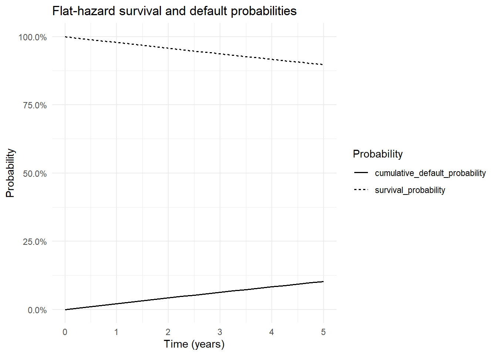

knitr::opts_chunk$set(
collapse = TRUE,
comment = "#>",
warning = FALSE,
message = FALSE
)
suppressPackageStartupMessages({
library(tidyverse)
library(ggthemes)
library(QuantLib)
library(GaussQuant)
library(tidyverse)
library(broom)
})第II-8章 信用リスクとCDS
前章までの評価では、将来の市場価格、金利またはボラティリティの変動を扱った。本章では、契約相手または参照企業が債務を履行できなくなる信用リスクを検討する。
Credit Default Swap（CDS）は、参照企業などに信用事由が発生した場合に、プロテクションの売り手が買い手へ損失補償を支払う契約である。プロテクションの買い手は、その対価として契約期間中に定期的なPremiumを支払う。
したがって、CDSは二つのレグから構成される。
- Premium Leg：プロテクション買い手が定期的なSpreadを支払う。
- Protection Leg：信用事由が発生した場合に、プロテクション売り手が損失を補償する。
プロテクション買い手から見たCDS価値は、次のように表される。
\[ V_{\mathrm{CDS}} = V_{\mathrm{protection}} + V_{\mathrm{premium}} \]
Premium Legは支払いであるため通常は負、Protection Legは受取りであるため正となる。
CDS評価には、割引カーブだけでなく、将来のデフォルト確率を表すDefault Probability Curveが必要である。本章では、Hazard Rateから生存確率とデフォルト確率を求め、Premium LegとProtection Legを評価する。
まず、フラット割引率とフラットHazard Rateを使用して、MidPoint法によるCDS評価と手計算を比較する。次に、標準CDS2015契約をISDA CDS Engineで評価し、Fair spread、Fair upfrontおよびAccrual rebateを確認する。
8.1 信用リスクとCDSの基礎
8.1.1 デフォルト時刻と生存確率
デフォルトが発生する確率時刻を \(\tau\) とする。時点 \(t\) まで企業がデフォルトせずに存続する確率を、生存確率と呼ぶ。
\[ Q(t) = P(\tau>t) \]
時点0から \(t\) までの累積デフォルト確率は、
\[ P(\tau\leq t) = 1-Q(t) \]
である。
Hazard Rate \(\lambda(t)\) は、時点 \(t\) まで存続しているという条件の下で、その直後にデフォルトする瞬間的な強度を表す。
\[ \lambda(t) = \lim_{\Delta t\to 0} \frac{ P(t<\tau\leq t+\Delta t\mid \tau>t) }{ \Delta t } \]
Hazard Rateが一定のフラットモデルでは、生存確率は次式となる。
\[ Q(t) = \exp(-\lambda t) \]
累積デフォルト確率は、
\[ 1-Q(t) = 1-\exp(-\lambda t) \]
である。
Hazard Rateは、通常の意味での「一年間のデフォルト確率」そのものではない。たとえばHazard Rateが2%であっても、1年累積デフォルト確率は、
\[ 1-e^{-0.02} \]
であり、厳密には2%と一致しない。
8.1.2 Recovery RateとLoss Given Default
デフォルトが発生した場合でも、債権価値のすべてが失われるとは限らない。デフォルト後に回収できる元本比率をRecovery Rate \(R\) とする。
損失率Loss Given Defaultは、
\[ LGD = 1-R \]
である。
Notionalを \(N\) とすると、Protection Legが補償する損失額は概ね、
\[ N(1-R) \]
となる。
Recovery Rateが高いほどデフォルト時の損失は小さくなり、同じデフォルト確率であればCDS Spreadは低くなる。
8.1.3 CDS SpreadとHazard Rateの近似
連続的なPremium支払い、一定Hazard Rate、一定Recovery Rateおよび単純な割引を仮定すると、CDS Spread \(s\) とHazard Rate \(\lambda\) には次の近似関係がある。
\[ s \approx (1-R)\lambda \]
したがって、
\[ \lambda \approx \frac{s}{1-R} \]
となる。
この近似はCDSの信用水準を理解するために有用である。ただし、実際の評価では、四半期ごとの支払い、Accrual on default、割引、標準日付およびカーブ補間が影響するため、厳密なHazard Rateとは一致しない。
8.2 フラットカーブによるCDS評価
8.2.1 フラットカーブによる1年物CDS
1年物CDSを考える。
- 評価日：2022年9月19日
- 満期：2023年9月20日
- Notional：10,000,000
- 割引率：10%
- 市場Spread：130bp
- 契約Coupon：100bp
- Recovery Rate：40%
市場Spreadは130bpであるが、契約Couponは100bpである。このため、契約時点のCDS価値はゼロにならない。
trade_date_flat <- GaussQuant::date_GQL("2022-09-19")
maturity_date_flat <- GaussQuant::date_GQL("2023-09-20")
GaussQuant::set_eval_date_GQL(trade_date_flat)
notional_flat <- 10000000
risk_free_rate_flat <- 0.10
market_spread_flat <- 130 / 10000
contract_coupon_flat <- 100 / 10000
recovery_rate_flat <- 0.40
actual_365 <- QuantLib::Actual365Fixed()
actual_360 <- QuantLib::Actual360()
weekend_calendar <- QuantLib::WeekendsOnly()
flat_cds_input_tbl <- tibble::tribble(
~input, ~value,
"trade_date", "2022-09-19",
"maturity_date", "2023-09-20",
"notional", as.character(notional_flat),
"risk_free_rate", as.character(risk_free_rate_flat),
"market_spread", as.character(market_spread_flat),
"contract_coupon", as.character(contract_coupon_flat),
"recovery_rate", as.character(recovery_rate_flat)
)
GaussQuant::show_tbl_GQH(
flat_cds_input_tbl,
"Flat CDS input assumptions",
n = 20
)
#> # A tibble: 7 × 2
#> input value
#> <chr> <chr>
#> 1 trade_date 2022-09-19
#> 2 maturity_date 2023-09-20
#> 3 notional 1e+07
#> 4 risk_free_rate 0.1
#> 5 market_spread 0.013
#> 6 contract_coupon 0.01
#> 7 recovery_rate 0.48.2.2 Hazard Rate近似と確率曲線
市場Spread 130bpとRecovery Rate 40%から、フラットHazard Rateを近似する。
hazard_rate_approximation <- market_spread_flat /
(1 - recovery_rate_flat)
hazard_approximation_tbl <- tibble::tribble(
~metric, ~value,
"market_spread", market_spread_flat,
"recovery_rate", recovery_rate_flat,
"loss_given_default", 1 - recovery_rate_flat,
"hazard_rate_approx", hazard_rate_approximation
)
probability_time_grid <- seq(
0,
5,
by = 0.25
)
flat_probability_tbl <- tibble::tibble(
time = probability_time_grid
) |>
dplyr::mutate(
survival_probability = exp(
-hazard_rate_approximation * .data$time
),
cumulative_default_probability = 1 -
.data$survival_probability
)
flat_probability_plot_tbl <- flat_probability_tbl |>
tidyr::pivot_longer(
cols = c(
survival_probability,
cumulative_default_probability
),
names_to = "probability_type",
values_to = "probability"
)
flat_probability_plot <- ggplot2::ggplot(
flat_probability_plot_tbl,
ggplot2::aes(
x = .data$time,
y = .data$probability,
linetype = .data$probability_type
)
) +
ggplot2::geom_line(
linewidth = 0.7
) +
ggplot2::scale_y_continuous(
labels = scales::percent_format(
accuracy = 0.1
)
) +
ggplot2::labs(
title = "Flat-hazard survival and default probabilities",
x = "Time (years)",
y = "Probability",
linetype = "Probability"
) +
ggplot2::theme_minimal()
GaussQuant::show_tbl_GQH(
hazard_approximation_tbl,
"Flat hazard-rate approximation",
n = 20
)
#> # A tibble: 4 × 2
#> metric value
#> <chr> <dbl>
#> 1 market_spread 0.013
#> 2 recovery_rate 0.4
#> 3 loss_given_default 0.6
#> 4 hazard_rate_approx 0.0217
GaussQuant::show_tbl_GQH(
flat_probability_tbl,
"Flat-hazard probability curve",
n = 30
)
#> # A tibble: 21 × 3
#> time survival_probability cumulative_default_probability
#> <dbl> <dbl> <dbl>
#> 1 0 1 0
#> 2 0.25 0.995 0.00540
#> 3 0.5 0.989 0.0108
#> 4 0.75 0.984 0.0161
#> 5 1 0.979 0.0214
#> 6 1.25 0.973 0.0267
#> 7 1.5 0.968 0.0320
#> 8 1.75 0.963 0.0372
#> 9 2 0.958 0.0424
#> 10 2.25 0.952 0.0476
#> # ℹ 11 more rows
print(flat_probability_plot)
8.2.3 CDS Scheduleとカーブ
Premiumは四半期ごとに支払われるものとする。単純な教育用例として、評価日の翌日から満期までのForward Scheduleを作成する。
cds_schedule_flat <- QuantLib::Schedule(
trade_date_flat + 1L,
maturity_date_flat,
GaussQuant::period_months_GQL(3),
weekend_calendar,
"Following",
"Unadjusted",
"Forward",
FALSE
)
discount_curve_flat <- GaussQuant::flat_curve_GQL(
reference_date = trade_date_flat,
rate = risk_free_rate_flat,
day_counter = actual_365,
compounding = "Continuous"
)
discount_curve_handle_flat <- QuantLib::YieldTermStructureHandle(
discount_curve_flat
)
hazard_curve_flat <- QuantLib::FlatHazardRate(
trade_date_flat,
GaussQuant::quote_handle_GQL(
hazard_rate_approximation
),
actual_365
)
hazard_curve_handle_flat <- QuantLib::DefaultProbabilityTermStructureHandle(
hazard_curve_flat
)
flat_curve_check_tbl <- tibble::tribble(
~metric, ~value,
"discount_factor_at_maturity", discount_curve_flat$discount(
maturity_date_flat
),
"survival_probability_at_maturity", hazard_curve_flat$survivalProbability(
maturity_date_flat
),
"default_probability_to_maturity", 1 -
hazard_curve_flat$survivalProbability(
maturity_date_flat
),
"hazard_rate_at_maturity", hazard_curve_flat$hazardRate(
maturity_date_flat
)
)
GaussQuant::show_tbl_GQH(
GaussQuant::schedule_table_GQL(
cds_schedule_flat
),
"CDS schedule: flat-curve example",
n = 20
)
#> # A tibble: 5 × 2
#> period schedule_date
#> <int> <date>
#> 1 1 2022-09-20
#> 2 2 2022-12-20
#> 3 3 2023-03-20
#> 4 4 2023-06-20
#> 5 5 2023-09-20
GaussQuant::show_tbl_GQH(
flat_curve_check_tbl,
"Flat discount and hazard-curve check",
n = 20
)
#> # A tibble: 4 × 2
#> metric value
#> <chr> <dbl>
#> 1 discount_factor_at_maturity 0.905
#> 2 survival_probability_at_maturity 0.979
#> 3 default_probability_to_maturity 0.0215
#> 4 hazard_rate_at_maturity 0.02178.2.4 MidPoint CDS Engine
MidPoint法では、各Premium期間中に発生するデフォルトを、その期間の中点で発生したものとして近似する。
100bp CouponのCDSを作成し、GaussQuantのMidPoint CDS Engineで評価する。
cds_flat <- QuantLib::CreditDefaultSwap(
GaussQuant::cds_buyer_side_GQL(),
notional_flat,
contract_coupon_flat,
cds_schedule_flat,
"Following",
actual_360
)
midpoint_engine_flat <- GaussQuant::cds_midpoint_engine_GQL(
probability_handle = hazard_curve_handle_flat,
recovery_rate = recovery_rate_flat,
discount_handle = discount_curve_handle_flat
)
cds_flat$setPricingEngine(
midpoint_engine_flat
)
#> NULL
cds_flat_summary_tbl <- GaussQuant::cds_summary_GQL(
cds_flat
)
cds_flat_leg_check_tbl <- tibble::tribble(
~metric, ~value,
"coupon_leg_npv", cds_flat$couponLegNPV(),
"default_leg_npv", cds_flat$defaultLegNPV(),
"sum_of_two_legs", cds_flat$couponLegNPV() +
cds_flat$defaultLegNPV(),
"reported_npv", GaussQuant::cds_npv_GQL(
cds_flat
),
"difference", GaussQuant::cds_npv_GQL(
cds_flat
) -
(
cds_flat$couponLegNPV() +
cds_flat$defaultLegNPV()
)
)
GaussQuant::show_tbl_GQH(
cds_flat_summary_tbl,
"CDS summary: MidPoint engine with flat curves",
n = 20
)
#> # A tibble: 4 × 2
#> metric value
#> <chr> <dbl>
#> 1 npv 28116.
#> 2 fair_spread 0.0130
#> 3 coupon_leg_npv -94246.
#> 4 default_leg_npv 122362.
GaussQuant::show_tbl_GQH(
cds_flat_leg_check_tbl,
"CDS two-leg NPV check",
n = 20
)
#> # A tibble: 5 × 2
#> metric value
#> <chr> <dbl>
#> 1 coupon_leg_npv -94246.
#> 2 default_leg_npv 122362.
#> 3 sum_of_two_legs 28116.
#> 4 reported_npv 28116.
#> 5 difference 0プロテクション買い手から見て、Premium Legは負、Protection Legは正となる。契約CouponがFair Spreadより低ければ、プロテクション買い手に有利となり、CDS NPVは一般に正となる。
8.2.5 CDSキャッシュフローと確率表
GaussQuantのcds_cashflow_table_GQL()を利用し、各Premium期間の割引係数、生存確率、デフォルト確率および期間中点の情報を確認する。
cds_cashflow_flat_tbl <- GaussQuant::cds_cashflow_table_GQL(
cds_schedule = cds_schedule_flat,
protection_start_date = cds_flat$protectionStartDate(),
coupon_rate = contract_coupon_flat,
hazard_curve = hazard_curve_flat,
discount_curve = discount_curve_flat,
trade_date = trade_date_flat,
notional = notional_flat
)
GaussQuant::show_tbl_GQH(
cds_cashflow_flat_tbl,
"CDS cash-flow and probability table",
n = 20
)
#> # A tibble: 5 × 13
#> payment_date coupon_rate accrual_start accrual_end accrual_days
#> <chr> <dbl> <chr> <chr> <dbl>
#> 1 2022-09-20 NA <NA> 2022-09-20 NA
#> 2 2022-12-20 0.01 2022-09-20 2022-12-20 91
#> 3 2023-03-20 0.01 2022-12-20 2023-03-20 90
#> 4 2023-06-20 0.01 2023-03-20 2023-06-20 92
#> 5 2023-09-20 0.01 2023-06-20 2023-09-20 92
#> # ℹ 8 more variables: accrual_year_fraction_365 <dbl>, coupon_amount <dbl>,
#> # discount_factor <dbl>, survival_probability <dbl>,
#> # default_probability <dbl>, midpoint_date <chr>,
#> # midpoint_discount_factor <dbl>, midpoint_survival_probability <dbl>8.4 Hazard Rate推定と感応度
8.4.1 Zero-NPV CDSからHazard Rateを推定する
市場Spreadを契約Couponとして設定したCDSは、契約開始時点でNPVがゼロとなるようにHazard Rateを調整できる。
ここでは、市場Spread 130bpのCDSについて、MidPoint EngineのNPVがゼロとなるフラットHazard Rateをuniroot()で推定する。
cds_market_flat <- QuantLib::CreditDefaultSwap(
GaussQuant::cds_buyer_side_GQL(),
notional_flat,
market_spread_flat,
cds_schedule_flat,
"Following",
actual_360
)
cds_market_npv_at_hazard <- function(hazard_rate) {
engine <- GaussQuant::cds_midpoint_engine_GQL(
recovery_rate = recovery_rate_flat,
hazard_rate = hazard_rate,
discount_rate = risk_free_rate_flat,
reference_date = trade_date_flat,
day_counter = "Actual365Fixed"
)
cds_market_flat$setPricingEngine(
engine
)
GaussQuant::cds_npv_GQL(
cds_market_flat
)
}
hazard_calibration_result <- stats::uniroot(
cds_market_npv_at_hazard,
interval = c(
1e-8,
0.50
),
tol = 1e-10
)
hazard_rate_calibrated <- hazard_calibration_result$root
calibrated_midpoint_engine <- GaussQuant::cds_midpoint_engine_GQL(
recovery_rate = recovery_rate_flat,
hazard_rate = hazard_rate_calibrated,
discount_rate = risk_free_rate_flat,
reference_date = trade_date_flat,
day_counter = "Actual365Fixed"
)
cds_market_flat$setPricingEngine(
calibrated_midpoint_engine
)
#> NULL
hazard_calibration_tbl <- tibble::tribble(
~metric, ~value,
"market_spread", market_spread_flat,
"simple_hazard_approximation", hazard_rate_approximation,
"calibrated_hazard_rate", hazard_rate_calibrated,
"zero_npv_check", GaussQuant::cds_npv_GQL(
cds_market_flat
),
"fair_spread_check", GaussQuant::cds_fair_spread_GQL(
cds_market_flat
)
)
GaussQuant::show_tbl_GQH(
hazard_calibration_tbl,
"Flat hazard calibration from a zero-NPV CDS",
n = 20
)
#> # A tibble: 5 × 2
#> metric value
#> <chr> <dbl>
#> 1 market_spread 0.013
#> 2 simple_hazard_approximation 0.0217
#> 3 calibrated_hazard_rate 0.0217
#> 4 zero_npv_check 0.000000367
#> 5 fair_spread_check 0.0130単純近似 \(\lambda\approx s/(1-R)\) とカリブレーション結果は近いが、支払頻度と割引の影響により差が生じる。
8.4.2 SpreadとRecovery Rateの感応度
単純近似の下では、Spreadが高いほどHazard Rateは高くなる。また、同じSpreadでRecovery Rateを高く仮定すると、デフォルト時損失が小さくなるため、そのSpreadを説明するために必要なHazard Rateは高くなる。
credit_sensitivity_input_tbl <- tidyr::crossing(
market_spread_bp = c(
50,
100,
200
),
recovery_rate = c(
0.20,
0.40,
0.60
)
)
credit_sensitivity_tbl <- credit_sensitivity_input_tbl |>
dplyr::mutate(
market_spread = .data$market_spread_bp /
10000,
loss_given_default = 1 -
.data$recovery_rate,
hazard_rate_approx = .data$market_spread /
.data$loss_given_default,
survival_probability_5y = exp(
-5 * .data$hazard_rate_approx
),
cumulative_default_probability_5y = 1 -
.data$survival_probability_5y
)
GaussQuant::show_tbl_GQH(
credit_sensitivity_tbl,
"Spread and recovery-rate sensitivity",
n = 30
)
#> # A tibble: 9 × 7
#> market_spread_bp recovery_rate market_spread loss_given_default
#> <dbl> <dbl> <dbl> <dbl>
#> 1 50 0.2 0.005 0.8
#> 2 50 0.4 0.005 0.6
#> 3 50 0.6 0.005 0.4
#> 4 100 0.2 0.01 0.8
#> 5 100 0.4 0.01 0.6
#> 6 100 0.6 0.01 0.4
#> 7 200 0.2 0.02 0.8
#> 8 200 0.4 0.02 0.6
#> 9 200 0.6 0.02 0.4
#> # ℹ 3 more variables: hazard_rate_approx <dbl>, survival_probability_5y <dbl>,
#> # cumulative_default_probability_5y <dbl>Recovery RateとHazard Rateは、CDS Spreadだけから完全に独立して識別できない。実務ではRecovery Rateを外生的に仮定し、その仮定の下でDefault Probability Curveを構築することが多い。
8.5 標準CDS2015とISDAカーブ
8.5.1 標準CDSとCDS2015満期
標準CDSでは、満期を単純に取引日から5年後とするのではなく、CDS IMM日とCDS2015ルールに従って決定する。
次の5年物CDSを考える。
- 取引日：2022年8月19日
- 市場Spread：30.426bp
- 契約Coupon：100bp
- Notional：10,000,000
- Recovery Rate：40%
- 外生的なOIS割引率：0.25%
第II-3章ではOISカーブの構築を扱った。本章の目的は信用カーブとCDS評価であるため、割引カーブの動学やブートストラップを繰り返さず、フラットOIS割引率を外生的に与える。
trade_date_isda <- GaussQuant::date_GQL(
"2022-08-19"
)
GaussQuant::set_eval_date_GQL(
trade_date_isda
)
cds_tenor_isda <- GaussQuant::period_years_GQL(
5L
)
maturity_date_isda <- QuantLib::cdsMaturity(
trade_date_isda,
cds_tenor_isda,
"CDS2015"
)
market_spread_isda <- 30.426 / 10000
contract_coupon_isda <- 100 / 10000
notional_isda <- 10000000
recovery_rate_isda <- 0.40
ois_discount_rate_isda <- 0.0025
isda_cds_input_tbl <- tibble::tribble(
~input, ~value,
"trade_date", "2022-08-19",
"cds_tenor", "5Y",
"maturity_date", GaussQuant::iso_GQL(
maturity_date_isda
),
"market_spread_bp", as.character(
market_spread_isda *
10000
),
"contract_coupon_bp", as.character(
contract_coupon_isda *
10000
),
"notional", as.character(
notional_isda
),
"recovery_rate", as.character(
recovery_rate_isda
),
"ois_discount_rate", as.character(
ois_discount_rate_isda
)
)
GaussQuant::show_tbl_GQH(
isda_cds_input_tbl,
"ISDA CDS input assumptions",
n = 20
)
#> # A tibble: 8 × 2
#> input value
#> <chr> <chr>
#> 1 trade_date 2022-08-19
#> 2 cds_tenor 5Y
#> 3 maturity_date 2027-06-20
#> 4 market_spread_bp 30.426
#> 5 contract_coupon_bp 100
#> 6 notional 1e+07
#> 7 recovery_rate 0.4
#> 8 ois_discount_rate 0.00258.5.2 標準CDS2015 Schedule
CDS2015ルールにより、Premium支払日は標準化された四半期日へ調整される。
cds_calendar_isda <- QuantLib::WeekendsOnly()
cds_schedule_isda <- QuantLib::Schedule(
trade_date_isda,
maturity_date_isda,
GaussQuant::period_months_GQL(3),
cds_calendar_isda,
"Following",
"Unadjusted",
"CDS2015",
FALSE
)
GaussQuant::show_tbl_GQH(
GaussQuant::schedule_table_GQL(
cds_schedule_isda
),
"CDS schedule: 5Y CDS2015 example",
n = 30
)
#> # A tibble: 21 × 2
#> period schedule_date
#> <int> <date>
#> 1 1 2022-06-20
#> 2 2 2022-09-20
#> 3 3 2022-12-20
#> 4 4 2023-03-20
#> 5 5 2023-06-20
#> 6 6 2023-09-20
#> 7 7 2023-12-20
#> 8 8 2024-03-20
#> 9 9 2024-06-20
#> 10 10 2024-09-20
#> # ℹ 11 more rows8.5.3 ISDA用割引カーブ
discount_curve_isda <- GaussQuant::flat_curve_GQL(
reference_date = trade_date_isda,
rate = ois_discount_rate_isda,
day_counter = actual_365,
compounding = "Continuous"
)
discount_curve_handle_isda <- QuantLib::YieldTermStructureHandle(
discount_curve_isda
)
isda_discount_check_tbl <- tibble::tribble(
~metric, ~value,
"ois_discount_rate", ois_discount_rate_isda,
"discount_factor_at_maturity", discount_curve_isda$discount(
maturity_date_isda
)
)
GaussQuant::show_tbl_GQH(
isda_discount_check_tbl,
"ISDA discount-curve check",
n = 20
)
#> # A tibble: 2 × 2
#> metric value
#> <chr> <dbl>
#> 1 ois_discount_rate 0.0025
#> 2 discount_factor_at_maturity 0.9888.5.4 ISDA整合Hazard Rateの推定
市場Spread 30.426bpをRunning Spreadとする標準CDSを作成し、ISDA EngineのNPVがゼロとなるフラットHazard Rateを推定する。
market_cds_isda <- GaussQuant::make_cds_GQL(
maturity_date = maturity_date_isda,
running_spread = market_spread_isda,
notional = notional_isda,
side = "buyer",
trade_date = trade_date_isda,
coupon_tenor = "3M",
day_counter = "Actual360",
date_generation_rule = "CDS2015"
)
isda_market_npv_at_hazard <- function(hazard_rate) {
probability_handle <- GaussQuant::flat_hazard_rate_GQL(
hazard_rate = hazard_rate,
reference_date = trade_date_isda,
day_counter = "Actual365Fixed"
)
engine <- GaussQuant::cds_isda_engine_GQL(
hazard_curve_handle = probability_handle,
recovery_rate = recovery_rate_isda,
discount_curve_handle = discount_curve_handle_isda
)
market_cds_isda$setPricingEngine(
engine
)
GaussQuant::cds_npv_GQL(
market_cds_isda
)
}
isda_hazard_calibration_result <- stats::uniroot(
isda_market_npv_at_hazard,
interval = c(
1e-8,
0.50
),
tol = 1e-10
)
hazard_rate_isda <- isda_hazard_calibration_result$root
hazard_curve_isda <- QuantLib::FlatHazardRate(
trade_date_isda,
GaussQuant::quote_handle_GQL(
hazard_rate_isda
),
actual_365
)
hazard_curve_handle_isda <- QuantLib::DefaultProbabilityTermStructureHandle(
hazard_curve_isda
)
isda_hazard_check_tbl <- tibble::tribble(
~metric, ~value,
"market_spread", market_spread_isda,
"recovery_rate", recovery_rate_isda,
"implied_hazard_rate", hazard_rate_isda,
"simple_hazard_approximation", market_spread_isda /
(
1 -
recovery_rate_isda
),
"survival_probability_at_maturity",
hazard_curve_isda$survivalProbability(
maturity_date_isda
),
"default_probability_to_maturity",
1 -
hazard_curve_isda$survivalProbability(
maturity_date_isda
)
)
GaussQuant::show_tbl_GQH(
isda_hazard_check_tbl,
"ISDA implied hazard-rate check",
n = 20
)
#> # A tibble: 6 × 2
#> metric value
#> <chr> <dbl>
#> 1 market_spread 0.00304
#> 2 recovery_rate 0.4
#> 3 implied_hazard_rate 0.00514
#> 4 simple_hazard_approximation 0.00507
#> 5 survival_probability_at_maturity 0.975
#> 6 default_probability_to_maturity 0.0246市場SpreadとRecovery Rateから得られる単純近似と、ISDA EngineでゼロNPVとなるHazard Rateには差が生じる。標準CDSの日付、Accrual on default、割引および数値積分が評価へ反映されるためである。
8.6 ISDA Engineと評価比較
8.6.1 ISDA CDS Engine
契約Couponを標準Coupon 100bpへ固定した5年物CDSを評価する。
市場Spreadは30.426bpであり、契約Coupon 100bpより低い。プロテクション買い手は市場水準より高いPremiumを支払うため、Running Couponだけで評価すると一般に負のNPVとなる。
isda_engine <- GaussQuant::cds_isda_engine_GQL(
hazard_curve_handle = hazard_curve_handle_isda,
recovery_rate = recovery_rate_isda,
discount_curve_handle = discount_curve_handle_isda
)
cds_isda <- GaussQuant::make_cds_GQL(
maturity_date = maturity_date_isda,
running_spread = contract_coupon_isda,
notional = notional_isda,
side = "buyer",
trade_date = trade_date_isda,
coupon_tenor = "3M",
day_counter = "Actual360",
date_generation_rule = "CDS2015",
pricing_engine = isda_engine
)
cds_isda_summary_base_tbl <- GaussQuant::cds_summary_GQL(
cds_isda
)
GaussQuant::show_tbl_GQH(
cds_isda_summary_base_tbl,
"ISDA CDS base summary",
n = 20
)
#> # A tibble: 4 × 2
#> metric value
#> <chr> <dbl>
#> 1 npv -334963.
#> 2 fair_spread 0.00304
#> 3 coupon_leg_npv -498392.
#> 4 default_leg_npv 146485.8.6.2 Accrual rebateとNPV分解
標準CDSでは、取引日が前回の標準Coupon日と次回Coupon日の間にある場合、契約開始時にAccrual rebateが発生することがある。
この場合、プロテクション買い手から見たNPVは、
\[ V_{\mathrm{CDS}} = V_{\mathrm{coupon}} + V_{\mathrm{default}} + V_{\mathrm{accrual\ rebate}} \]
となる。
coupon_leg_npv_isda <- cds_isda$couponLegNPV()
default_leg_npv_isda <- cds_isda$defaultLegNPV()
accrual_rebate_npv_isda <- tryCatch(
as.numeric(
cds_isda$accrualRebateNPV()
),
error = function(e) NA_real_
)
three_component_sum_isda <- coupon_leg_npv_isda +
default_leg_npv_isda +
accrual_rebate_npv_isda
isda_leg_check_tbl <- tibble::tribble(
~metric, ~value,
"coupon_leg_npv", coupon_leg_npv_isda,
"default_leg_npv", default_leg_npv_isda,
"accrual_rebate_npv", accrual_rebate_npv_isda,
"three_component_sum", three_component_sum_isda,
"reported_npv", GaussQuant::cds_npv_GQL(
cds_isda
),
"difference", GaussQuant::cds_npv_GQL(
cds_isda
) -
three_component_sum_isda
)
GaussQuant::show_tbl_GQH(
isda_leg_check_tbl,
"ISDA CDS NPV decomposition",
n = 20
)
#> # A tibble: 6 × 2
#> metric value
#> <chr> <dbl>
#> 1 coupon_leg_npv -498392.
#> 2 default_leg_npv 146485.
#> 3 accrual_rebate_npv 16944.
#> 4 three_component_sum -334963.
#> 5 reported_npv -334963.
#> 6 difference 08.6.3 Fair SpreadとFair Upfront
Fair Spreadは、Upfrontを授受せずにCDS NPVをゼロとするRunning Spreadである。
Fair Upfrontは、契約Couponを標準Couponへ固定したまま、契約価値を調整するために開始時点で授受するNotional比率である。
fair_spread_isda <- GaussQuant::cds_fair_spread_GQL(
cds_isda
)
fair_upfront_isda <- tryCatch(
as.numeric(
cds_isda$fairUpfront()
),
error = function(e) NA_real_
)
fair_upfront_amount_isda <- fair_upfront_isda *
notional_isda
isda_cds_summary_tbl <- tibble::tribble(
~metric, ~value,
"coupon_leg_npv", coupon_leg_npv_isda,
"default_leg_npv", default_leg_npv_isda,
"accrual_rebate_npv", accrual_rebate_npv_isda,
"cds_npv", GaussQuant::cds_npv_GQL(
cds_isda
),
"market_spread", market_spread_isda,
"contract_coupon", contract_coupon_isda,
"fair_spread", fair_spread_isda,
"fair_upfront", fair_upfront_isda,
"fair_upfront_amount", fair_upfront_amount_isda,
"hazard_rate", hazard_rate_isda
)
GaussQuant::show_tbl_GQH(
isda_cds_summary_tbl,
"CDS summary: ISDA engine",
n = 30
)
#> # A tibble: 10 × 2
#> metric value
#> <chr> <dbl>
#> 1 coupon_leg_npv -498392.
#> 2 default_leg_npv 146485.
#> 3 accrual_rebate_npv 16944.
#> 4 cds_npv -334963.
#> 5 market_spread 0.00304
#> 6 contract_coupon 0.01
#> 7 fair_spread 0.00304
#> 8 fair_upfront -0.0335
#> 9 fair_upfront_amount -334974.
#> 10 hazard_rate 0.00514この例では、契約Couponが市場Spreadより高いため、プロテクション買い手は市場より多くのPremiumを支払う。したがって、契約開始時の価値を調整するUpfrontが必要となる。
Fair Upfrontの正負は、QuantLibにおけるBuyer／Sellerの符号規約と契約設定に依存する。符号だけで判断せず、CDS NPV、契約Coupon、Fair SpreadおよびUpfront金額を一緒に確認する必要がある。
8.6.4 ISDA用キャッシュフロー表
標準CDS2015 Schedule、ISDA整合Hazard Curveおよび割引カーブから、Premium期間ごとの確率情報を作成する。
cds_cashflow_isda_tbl <- GaussQuant::cds_cashflow_table_GQL(
cds_schedule = cds_schedule_isda,
protection_start_date = cds_isda$protectionStartDate(),
coupon_rate = contract_coupon_isda,
hazard_curve = hazard_curve_isda,
discount_curve = discount_curve_isda,
trade_date = trade_date_isda,
notional = notional_isda
)
GaussQuant::show_tbl_GQH(
cds_cashflow_isda_tbl,
"CDS cash-flow table: CDS2015 example",
n = 30
)
#> # A tibble: 21 × 13
#> payment_date coupon_rate accrual_start accrual_end accrual_days
#> <chr> <dbl> <chr> <chr> <dbl>
#> 1 2022-08-19 NA <NA> 2022-08-19 NA
#> 2 2022-09-20 0.01 2022-06-20 2022-09-20 92
#> 3 2022-12-20 0.01 2022-09-20 2022-12-20 91
#> 4 2023-03-20 0.01 2022-12-20 2023-03-20 90
#> 5 2023-06-20 0.01 2023-03-20 2023-06-20 92
#> 6 2023-09-20 0.01 2023-06-20 2023-09-20 92
#> 7 2023-12-20 0.01 2023-09-20 2023-12-20 91
#> 8 2024-03-20 0.01 2023-12-20 2024-03-20 91
#> 9 2024-06-20 0.01 2024-03-20 2024-06-20 92
#> 10 2024-09-20 0.01 2024-06-20 2024-09-20 92
#> # ℹ 11 more rows
#> # ℹ 8 more variables: accrual_year_fraction_365 <dbl>, coupon_amount <dbl>,
#> # discount_factor <dbl>, survival_probability <dbl>,
#> # default_probability <dbl>, midpoint_date <chr>,
#> # midpoint_discount_factor <dbl>, midpoint_survival_probability <dbl>この表はCDSの経済構造を理解するためのMidPoint型分解である。ISDA Engineは、標準日付、Accrual on default、数値積分および曲線補間をより厳密に扱うため、この表から得られる単純近似と完全には一致しない。
8.6.5 MidPoint型近似とISDA Engine
ISDA用キャッシュフロー表から、Premium Leg、Protection Leg、RPV01およびFair Spreadを簡易計算する。
premium_leg_hand_isda <- -sum(
cds_cashflow_isda_tbl$coupon_amount *
cds_cashflow_isda_tbl$discount_factor *
cds_cashflow_isda_tbl$midpoint_survival_probability,
na.rm = TRUE
)
protection_leg_per_unit_hand_isda <- (
1 -
recovery_rate_isda
) *
sum(
cds_cashflow_isda_tbl$midpoint_discount_factor *
cds_cashflow_isda_tbl$default_probability,
na.rm = TRUE
)
protection_leg_hand_isda <- notional_isda *
protection_leg_per_unit_hand_isda
risky_pv01_hand_isda <- sum(
(
cds_cashflow_isda_tbl$accrual_days /
360
) *
cds_cashflow_isda_tbl$discount_factor *
cds_cashflow_isda_tbl$midpoint_survival_probability,
na.rm = TRUE
)
fair_spread_hand_isda <- protection_leg_per_unit_hand_isda /
risky_pv01_hand_isda
cds_npv_hand_isda <- premium_leg_hand_isda +
protection_leg_hand_isda +
accrual_rebate_npv_isda
isda_hand_check_tbl <- tibble::tribble(
~metric, ~hand_value, ~isda_value,
"coupon_leg_npv", premium_leg_hand_isda, coupon_leg_npv_isda,
"default_leg_npv", protection_leg_hand_isda, default_leg_npv_isda,
"cds_npv", cds_npv_hand_isda, GaussQuant::cds_npv_GQL(
cds_isda
),
"fair_spread", fair_spread_hand_isda, fair_spread_isda
) |>
dplyr::mutate(
difference = .data$hand_value -
.data$isda_value
)
GaussQuant::show_tbl_GQH(
isda_hand_check_tbl,
"MidPoint-style approximation and ISDA comparison",
n = 20
)
#> # A tibble: 4 × 4
#> metric hand_value isda_value difference
#> <chr> <dbl> <dbl> <dbl>
#> 1 coupon_leg_npv -498112. -498392. 280.
#> 2 default_leg_npv 146486. 146485. 0.194
#> 3 cds_npv -334682. -334963. 280.
#> 4 fair_spread 0.00294 0.00304 -0.0001028.6.6 MidPoint EngineとISDA Engineの比較
同じHazard Curve、Recovery Rate、割引カーブおよび標準Couponを使用し、MidPoint EngineとISDA Engineの評価差を確認する。
midpoint_engine_isda_inputs <- GaussQuant::cds_midpoint_engine_GQL(
probability_handle = hazard_curve_handle_isda,
recovery_rate = recovery_rate_isda,
discount_handle = discount_curve_handle_isda
)
cds_midpoint_standard <- GaussQuant::make_cds_GQL(
maturity_date = maturity_date_isda,
running_spread = contract_coupon_isda,
notional = notional_isda,
side = "buyer",
trade_date = trade_date_isda,
coupon_tenor = "3M",
day_counter = "Actual360",
date_generation_rule = "CDS2015",
pricing_engine = midpoint_engine_isda_inputs
)
midpoint_standard_summary_tbl <- GaussQuant::cds_summary_GQL(
cds_midpoint_standard
) |>
dplyr::mutate(
engine = "MidPoint"
)
isda_standard_summary_tbl <- GaussQuant::cds_summary_GQL(
cds_isda
) |>
dplyr::mutate(
engine = "ISDA"
)
engine_comparison_tbl <- dplyr::bind_rows(
midpoint_standard_summary_tbl,
isda_standard_summary_tbl
) |>
dplyr::relocate(
.data$engine
) |>
tidyr::pivot_wider(
names_from = engine,
values_from = value
) |>
dplyr::mutate(
difference_isda_minus_midpoint = .data$ISDA -
.data$MidPoint
)
GaussQuant::show_tbl_GQH(
engine_comparison_tbl,
"MidPoint and ISDA CDS engine comparison",
n = 20
)
#> # A tibble: 4 × 4
#> metric MidPoint ISDA difference_isda_minus_midpoint
#> <chr> <dbl> <dbl> <dbl>
#> 1 npv -334951. -334963. -1.17e+1
#> 2 fair_spread 0.00304 0.00304 -7.66e-8
#> 3 coupon_leg_npv -498380. -498392. -1.15e+1
#> 4 default_leg_npv 146486. 146485. -1.94e-1MidPoint法は、各Premium期間内のデフォルト時点を期間中点へ集約する。ISDA Engineは標準市場規約に合わせて、より詳細な日付処理と積分を行う。そのため、同じカーブを用いてもLeg NPVとFair Spreadに差が生じる。
8.7 まとめ
CDSは、Premium LegとProtection Legから構成される。プロテクション買い手はPremiumを支払い、信用事由が発生した場合に損失補償を受け取る。
Hazard Rateは、企業がその時点まで存続しているという条件の下での瞬間的なデフォルト強度である。フラットHazard Rateでは、生存確率は次式で表される。
\[ Q(t) = e^{-\lambda t} \]
Recovery Rate \(R\) を仮定すると、CDS SpreadとHazard Rateには、
\[ \lambda \approx \frac{s}{1-R} \]
という近似関係がある。ただし、厳密なHazard Rateは、Premium支払日、割引、Accrual on defaultおよび標準CDS規約を反映して推定する。
Premium Legの単位Spread当たり現在価値がRisky PV01であり、Fair SpreadはProtection Legの単位Notional価値をRisky PV01で割って求められる。
MidPoint Engineは、デフォルト時点を各期間の中点で近似するため、CDS評価の構造を理解しやすい。ISDA Engineは、標準CDS2015の日付、Accrual rebate、Accrual on defaultおよび市場規約をより厳密に扱う。
標準Couponと市場Spreadが異なる場合、Running Couponだけでは契約価値がゼロにならない。この差を契約開始時に調整するものがFair Upfrontである。
chapter08_summary_tbl <- tibble::tribble(
~section, ~main_result,
"Hazard Rate", "Survival and cumulative default probabilities",
"MidPoint CDS", "Premium and protection leg decomposition",
"Hazard calibration", "Zero-NPV market CDS",
"CDS2015", "Standard maturity and coupon schedule",
"ISDA CDS", "Fair spread, upfront, and accrual rebate",
"Engine comparison", "MidPoint approximation versus ISDA pricing"
)
GaussQuant::show_tbl_GQH(
chapter08_summary_tbl,
"Chapter II-8 summary",
n = 20
)
#> # A tibble: 6 × 2
#> section main_result
#> <chr> <chr>
#> 1 Hazard Rate Survival and cumulative default probabilities
#> 2 MidPoint CDS Premium and protection leg decomposition
#> 3 Hazard calibration Zero-NPV market CDS
#> 4 CDS2015 Standard maturity and coupon schedule
#> 5 ISDA CDS Fair spread, upfront, and accrual rebate
#> 6 Engine comparison MidPoint approximation versus ISDA pricing
cat(
"\nChapter II-8 Credit risk and CDS completed successfully.\n"
)
#>
#> Chapter II-8 Credit risk and CDS completed successfully.